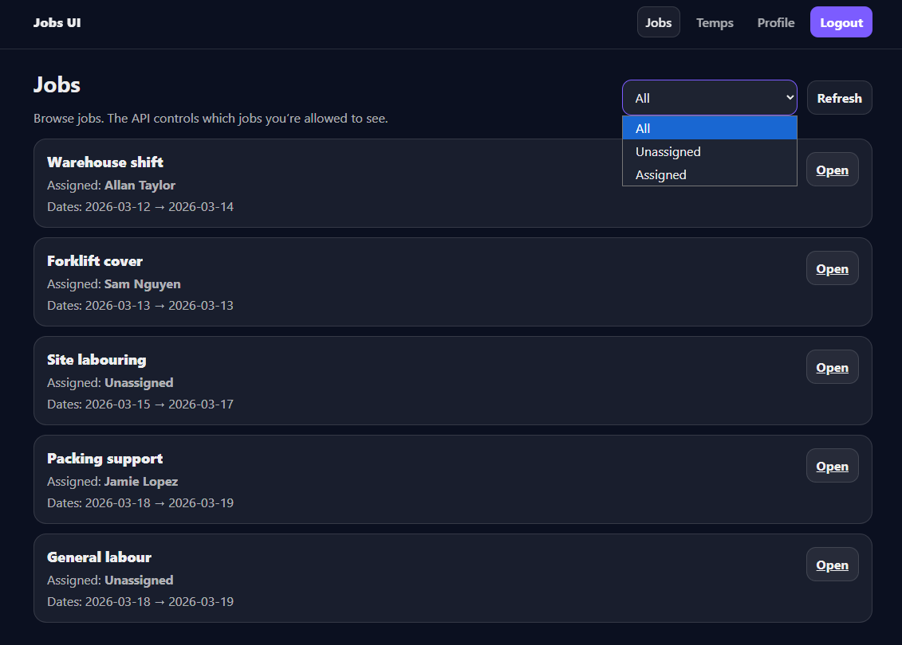
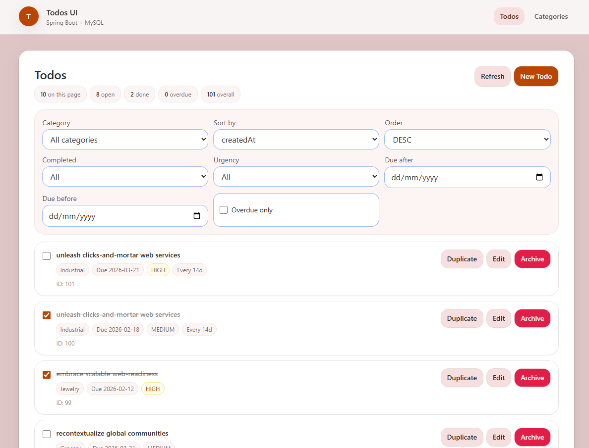
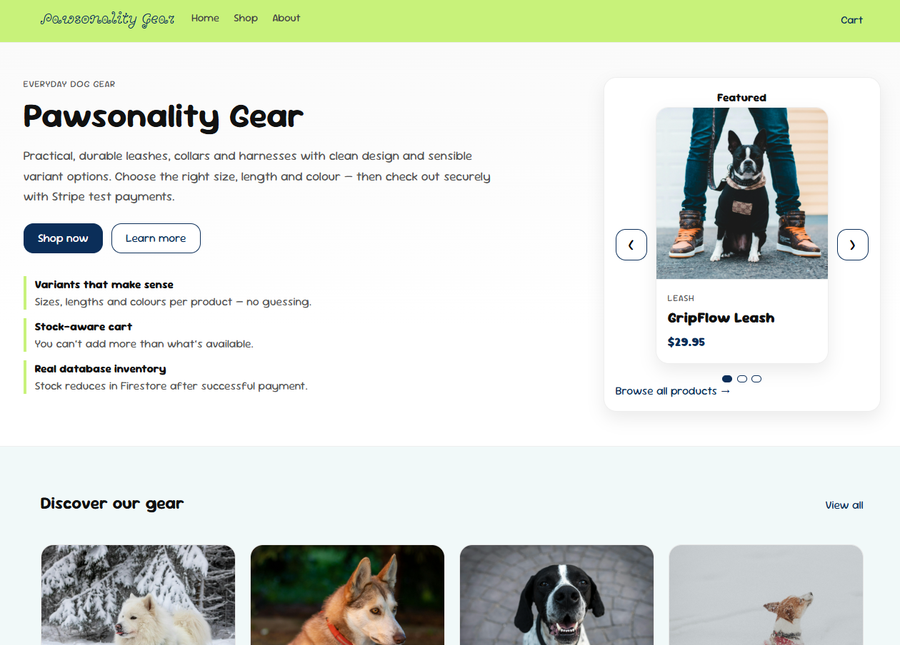
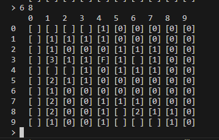
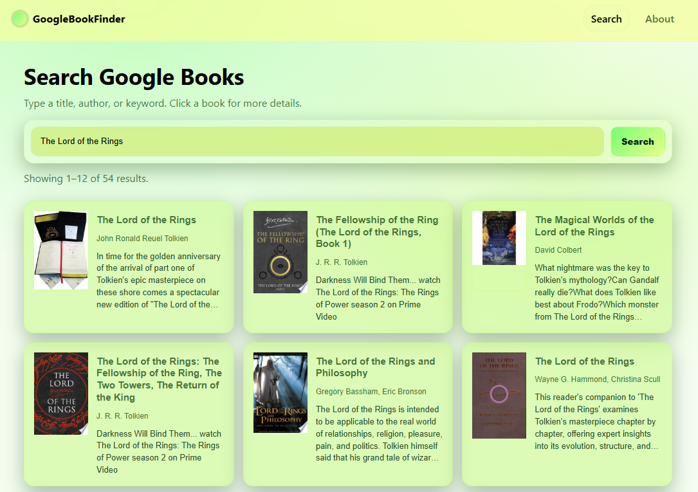
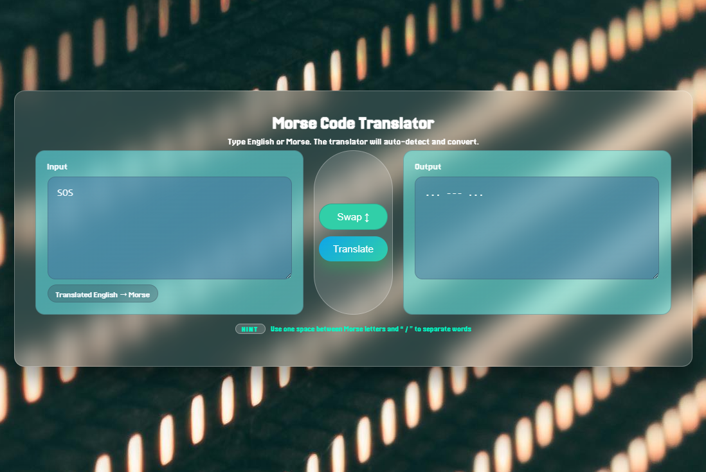
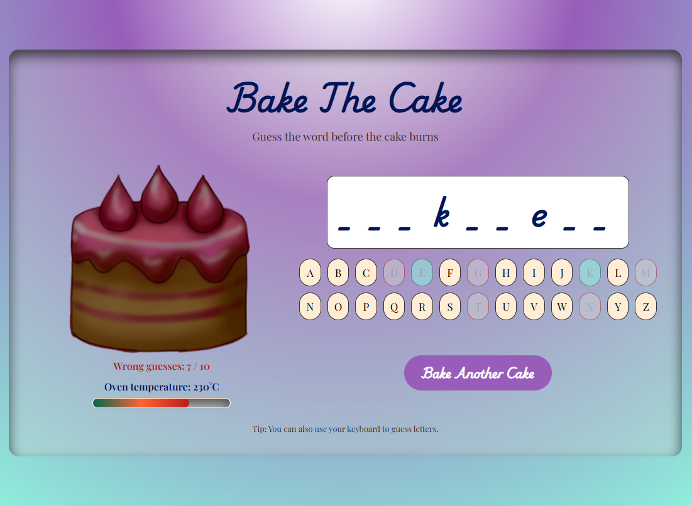

Languages
- HTML5
- CSS / SCSS
- JavaScript
- TypeScript
- Java
- SQL
Hi, my name is
Software Developer | SaaS & Application Support Background
I build full-stack applications with React, TypeScript, Java, Spring Boot, REST APIs, SQL databases, cloud deployment, and AI-assisted workflows. I recently completed the _nology Pathway to Tech Program and bring 5+ years of experience supporting enterprise SaaS and business systems.
About me
I am a software developer with a strong foundation in full-stack development and a professional background in SaaS customer success and application support. I enjoy building practical applications that solve real problems, especially where good user experience, reliable business logic, and clear system behaviour matter.
I recently completed the _nology Pathway to Tech Program (2026), an intensive industry-led software engineering course covering HTML, CSS, JavaScript, React, TypeScript, Java, Spring Boot, REST APIs, test-driven development, databases, and cloud fundamentals.
Before moving into software development, I spent more than five years working with enterprise systems including Salesforce, HubSpot, Oracle, SAP, and Infor M3. This experience helps me approach software from both a technical and user-support perspective, with strong attention to troubleshooting, usability, documentation, and real-world business workflows.
I also have a creative background in digital art, drawing, and design, which supports my interest in UI/UX and motivates me to build clean, accessible, and user-friendly interfaces.
Skills
Technologies, tools, and practices I use across frontend, backend, cloud, testing, and support-focused software development.
Projects
Selected projects showing full-stack development, secure backend architecture, cloud deployment, AI-assisted workflows, testing, and practical problem-solving.

A cloud-deployed workforce management platform for managing temporary workers, jobs, availability, assignments, and organisational hierarchy. The system includes a React frontend, a secured Spring Boot REST API, and an MCP assistant server that enables AI-assisted workforce actions.
Built as a production-style multi-service application with secure authentication, CSRF protection, hierarchical access rules, conflict-prevention business logic, automated tests, and AWS deployment through Amplify, Elastic Beanstalk, Route 53, Certificate Manager, Aurora, and RDS.

A full-stack task management application with a React frontend and Spring Boot backend. It supports task creation, updates, category filtering, sorting, and soft delete functionality through a structured REST API.
Built to strengthen backend architecture, DTO design, service and repository layering, environment-based configuration, MySQL integration, and clean separation between frontend and backend responsibilities.

A responsive e-commerce demo built with React, Firebase Firestore, Stripe Checkout, and a small Express backend. Products and variant stock are stored in Firestore, while the checkout process is handled through Stripe.
Built to explore real-world e-commerce workflows including cart persistence, product variants, checkout session creation, inventory control, backend communication, and Firestore transactions after payment.

A console-based implementation of Minesweeper built in Java, focused on object-oriented design, mine placement, adjacent mine calculation, recursive cascade reveal logic, and win/loss conditions.
Built to strengthen algorithmic thinking, Java fundamentals, separation of concerns, test coverage, and the design of predictable business/game logic.

A responsive React application that allows users to search for books using the Google Books API and view detailed book information in a modal interface.
Built to practise external API integration, async data fetching, conditional rendering, reusable components, and user-friendly search experiences.

A web app that translates between English and Morse code, automatically detects the input type, and keeps core translation logic separated into testable pure functions.
Built to reinforce clean logic separation, unit testing, reliable input transformation, and defensive handling of user input.

A browser-based Hangman game built with vanilla JavaScript, HTML, and SCSS. Instead of building a gallows, the player attempts to finish baking a cake before running out of guesses.
Built to practise DOM manipulation, keyboard and button input, game state management, conditional UI updates, and themed interface design.
Contact me
Available for software developer, application support, technical support, production support, and cloud application roles in Sydney, Central Coast, or remote.